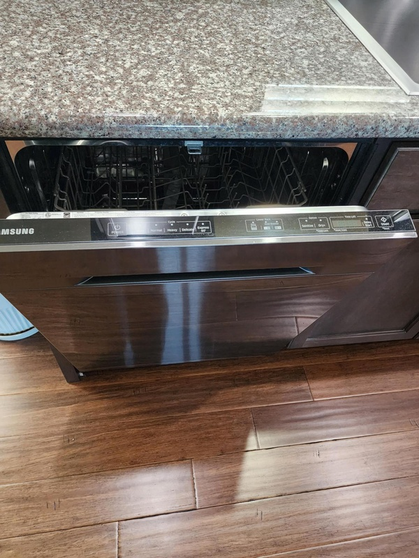
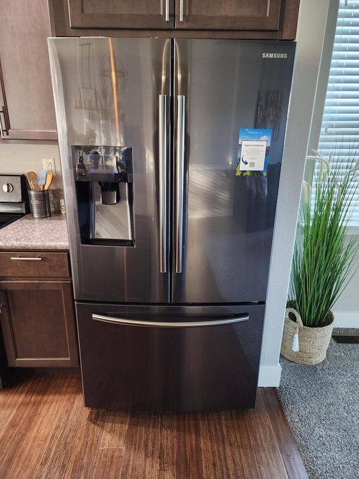
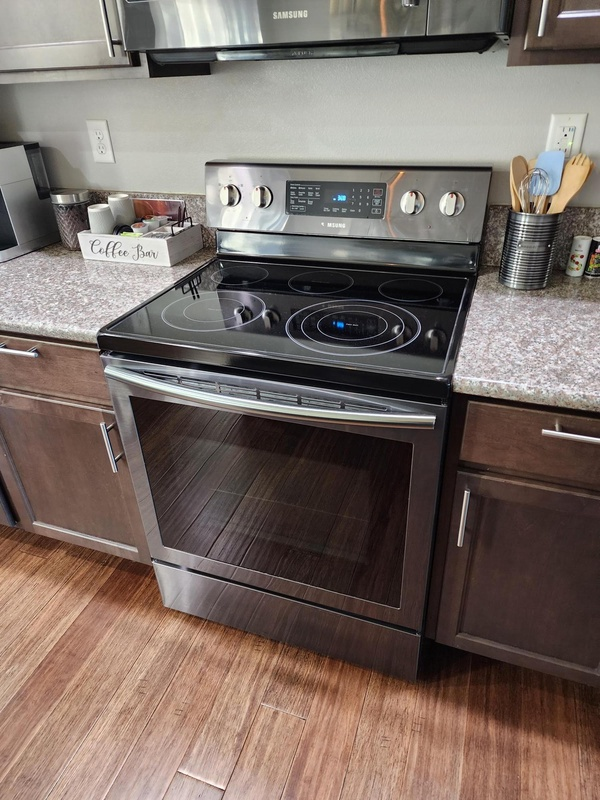
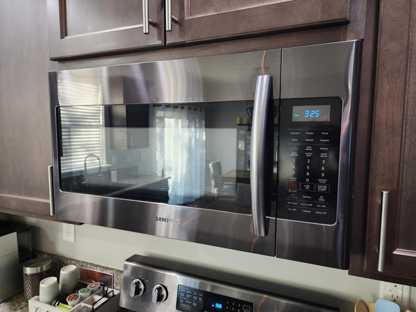
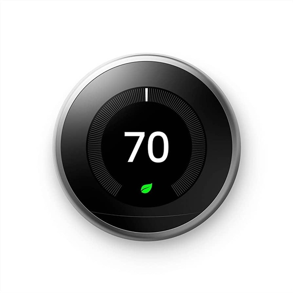
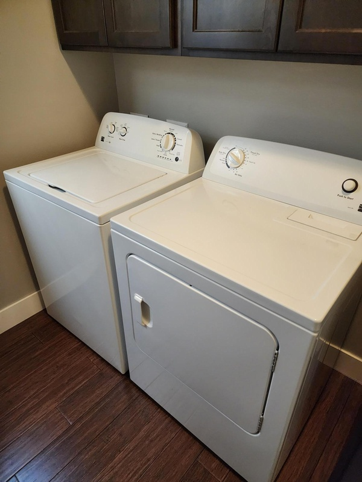

Kitchen Equipment
 Dishwasher: it's very simple, we promise! We provide a supply of detergent pods (located under the sink) - you’ll need to insert one into the flip box container on the inside of the dishwasher door. Please only use the tablets provided. Then press the program button of your choice - there are a few settings which are obvious - then press the start button. If needed, please click here to view the user manual.

Refrigerator: you shouldn’t need to adjust any settings. If you run into any difficulties (e.g. it's not cooling efficiently) please let us know. If needed, please click here to view the user manual.

Range: The electric range is also fairly self-explanatory, but please click here to view the user manual if needed.

Microwave: Click here to view the user manual for the microwave, if needed.
Heating & Cooling
 You’ll find the thermostat on the wall leading into the hallway that allows you to control the temperature of the home - just turn the circular dial left (lower) or right (higher) to adjust the temperature. If you're running the air conditioning, please ensure that all windows and outside doors are closed to ensure it operates at the maximum efficiency. We recommend a setting of 72F which we find keeps the place at a comfortable temperature.
Laundry Appliances
 We have a washing machine and separate dryer located in the utility room next to the kitchen. There are some TidePods that you’re welcome to use if you wish (in the cabinet above the washer). To operate the machines, simply select the program you want, place the detergent in the washer, close the door, and hit start. If in any doubt, click here to see the user manual for the washer or here to see the user manual for the dryer. *NOTE: Please be sure to empty the dryer's lint screen in between cycles to maintain good air flow and minimize fire risk.